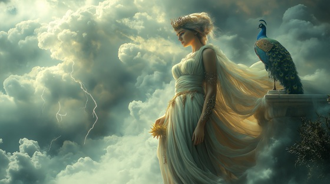

In Greek mythology, Hera is the wife and sister of Zeus, the Queen of the Olympian gods. She governs marriage, sovereignty, and divine order—but is also remembered for her wrath toward Zeus’s endless affairs.
This song gives Hera her voice—not just as a scorned wife, but as a goddess of immense power and dignity. She endures humiliation and betrayal not out of weakness, but because she is bound to Olympus by fate and throne alike. In myth, Hera is no passive figure—she punishes rivals, commands the skies, and outlasts all storms.
Queen of Olympus
I crowned the stars, I shaped the throne
The skies were mine before his own
I watched him rise with serpent smile
And still I stood, the queen in trial
They praise his flame, they chant his name—
But I am thunder all the same
I am Hera, crown of sky
The storm behind the eagle’s cry
They speak of him in awe and song—
But I endure, I make him strong
He strays through fields of mortal lust
While I remain, divine and just
Each oath he breaks, I see, I feel—
And curse the trail of love he steals
No queen forgets, no goddess sleeps—
I plant my wrath where silence weeps
I am Hera, crown of sky
The storm behind the eagle’s cry
They speak of him in awe and song—
But I endure, I make him strong
I birthed the flame, I bore the war
I opened gates no gods restore
He may command the lightning's spear—
But I am what he learns to fear
[Bridge – Spoken with rising orchestration]
HERA: “They call me jealous. They call me rage.
Let them. Even Olympus bows to me in silence.”
I am Hera, crown of sky
The storm behind the eagle’s cry
Let mortals kneel and legends grow—
I am the fire he cannot throw
He may rule, but I remain—
The queen, the oath, the final flame